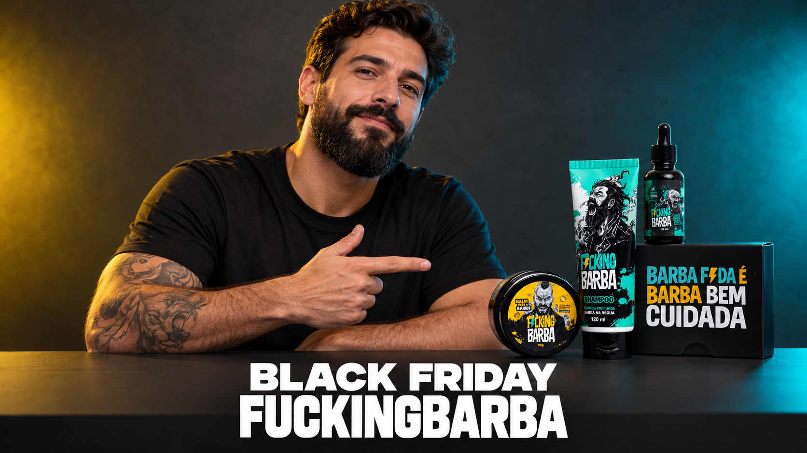
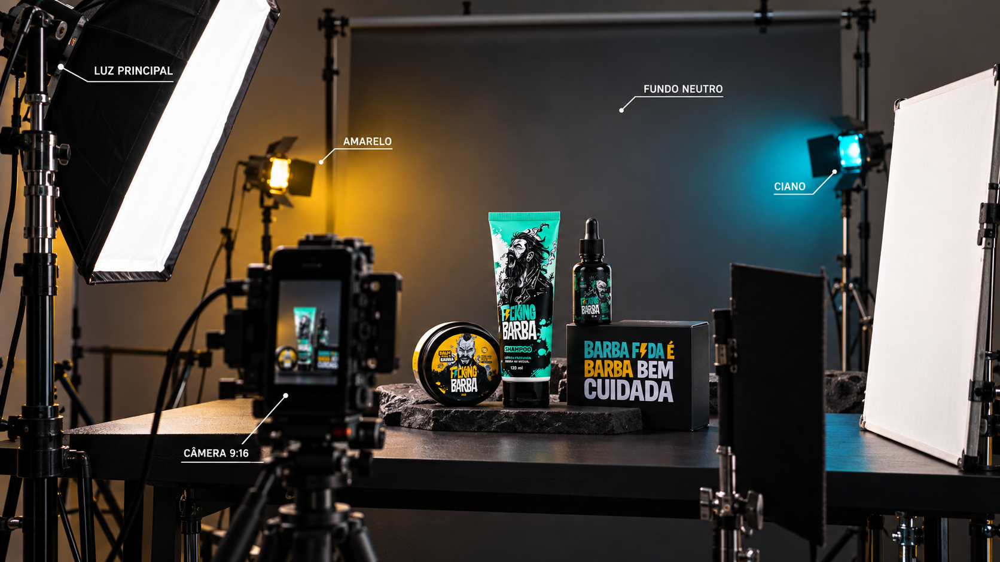
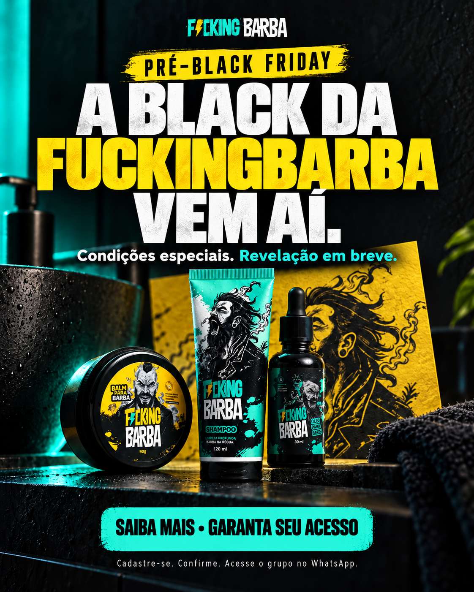
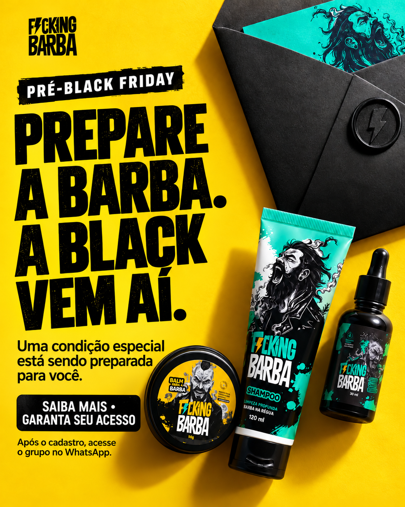
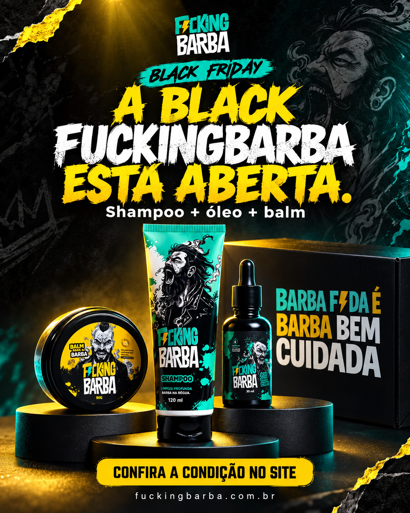

BASE
Preto
#000000RGB 0, 0, 0Fundos de impacto, fechamento e logo.
A Black vem aí. O cuidado entra em cena.
Produto, condições especiais e um convite no final: clique em Saiba mais e garanta seu acesso.

Abertura forte, descrição do produto e maior oferta da história da marca, como proposta de campanha. No fechamento: Saiba mais → cadastro → confirmação → grupo. Vagas limitadas nas comunidades.
O vídeo apresenta Black, produto e condições especiais. O convite entra somente no fechamento.
A pessoa preenche o mini formulário na landing page e confirma o cadastro.
Depois da confirmação, a pessoa segue para o grupo da FuckingBarba no WhatsApp.
Meteórico é a estratégia da campanha. O evento anunciado é a Black Friday da FuckingBarba. A primeira Black é o tema central apenas de BF-01 e BF-02. Base informada: 10.500 seguidores no Instagram.
Apresentadores seguem cinco etapas: abertura, kit, função do produto, condição e convite. Nas entrevistas, as respostas vêm antes da ponte com a marca. WhatsApp só no final; filme de até 45s. Edite os textos, deixe comentários e avalie cada roteiro. “Ruim — retirar” remove da lista ativa.
Fundo neutro, iluminação branca no rosto e acentos amarelo/ciano. O produto sustenta a fala; os textos entram em branco e o filme termina em até 45 segundos.
Preto e branco sustentam a composição. Amarelo chama atenção para a Black; menta aproxima a arte do universo dos produtos. Ciano entra como apoio na luz e em pequenos detalhes.
#000000RGB 0, 0, 0Fundos de impacto, fechamento e logo.
#12181FRGB 18, 24, 31Fundo neutro do set e blocos secundários.
#FFFFFFRGB 255, 255, 255Legendas, títulos e áreas de respiro.
#FFD84DRGB 255, 216, 77Black, palavra-chave e chamada principal.
#4FE4B6RGB 79, 228, 182Detalhes, linhas e segunda composição.
#22D3EERGB 34, 211, 238Recorte de luz e acentos pontuais no vídeo.
Base da referência: preto e branco observados no site oficial ↗; amarelo, menta e grafite identificados nas variáveis de cor do site em 12/10/2026. O ciano é uma extensão proposta para esta campanha, alinhada à direção de captação. Este guia adapta a identidade; os códigos não substituem um manual oficial da marca.
Ponto de partida para a área visual da peça. Escolha menta ou ciano como acento dominante; ajuste conforme a foto e o formato. Essa proporção não representa potência de luz.
Saiba mais →Fundo preto, título branco e palavra-chave amarela. Kit com cor original e detalhe menta. Fecho: “Saiba mais e garanta seu acesso”. Sem preço; o destino é cadastro → comunidade.
Ver oferta →Amarelo pode ocupar o fundo para variar a campanha. Título e CTA escuros mantêm a leitura. Após a abertura, inserir preço, desconto e prazo aprovados na área central; chamada para compra.

Legenda branca.Rosto e rótulos com luz branca suave. Fundo grafite com amarelo de um lado e ciano do outro, abaixo da intensidade da luz principal. Legenda branca; destaque amarelo em uma palavra por vez.
| Cenário e objetos | Parede ou tecido preto/grafite fosco, bancada escura e kit real. Use um detalhe amarelo ou menta. Se o ambiente já tiver textura, reduza os objetos para o produto continuar em destaque. |
|---|---|
| Iluminação | Trave o balanço de branco a partir da luz do rosto, em torno de 5.000–5.600 K se a fonte permitir. Aponte os LEDs coloridos para o fundo ou ombros; afaste-os do rosto e da embalagem. Ajuste no monitor para não estourar o amarelo. |
| Roupa e elenco | Camiseta lisa grafite ou preta; branca funciona quando houver separação do fundo. Evite estampas, outras marcas e roupas amarelas/ciano que dominem o quadro. Preserve a textura da barba e a cor natural da pele. |
| Legendas e títulos | Branco sobre preto/grafite. Em cenas claras, use faixa escura atrás da legenda. Destaque uma expressão curta em amarelo; menta/ciano entram em linhas, marcadores ou um detalhe por cena. Mantenha o texto na área central livre dos controles da plataforma. |
| Tratamento de cor | Contraste moderado, pretos com detalhe e pele natural. Controle a saturação dos LEDs separadamente. Preserve a cor dos rótulos e a textura dos fios; não use filtro azul/amarelo em toda a imagem. |
| Logo e composição | Use o arquivo original branco/preto com raio amarelo, com respiro e sem recolorir. Em fundo claro, preserve o contorno preto. Use recortes diagonais, linhas e poucos elementos de impacto, deixando o kit e a mensagem legíveis. |
Leitura: evite branco sobre amarelo, menta ou ciano em textos pequenos. Os contrastes acima são aproximados para cores chapadas; em vídeo, confira cada take. HEX/RGB orientam o digital: no set, ajuste a luz pela câmera; para impressão, faça conversão com o perfil da gráfica.
Cinza-grafite ou preto fosco, sem objetos competindo com a pessoa. Deixe 1,5–2 m entre ela e o fundo. Bancada preta, kit próximo e rótulos voltados à câmera. Roupa lisa e poucos elementos.
Softbox grande a 45° do rosto e um pouco acima dos olhos. Use rebatedor do outro lado para suavizar sombras. Essa luz é branca; o amarelo e o ciano entram como acentos, sem pintar a pele ou alterar rótulos.
Direcione as luzes coloridas para o fundo ou para um recorte discreto nos ombros. Deixe a intensidade abaixo da luz principal. Preserve áreas escuras para os textos brancos; evite misturar as duas cores sobre o produto.
Plano médio com referência de 50 mm e close de 85 mm; câmera na altura dos olhos. Grave vertical 9:16, preferencialmente em 4K, 30 fps. Rosto, kit e CTA precisam caber na área central. Use tripé e movimentos curtos.
Capte kit parado, rótulos e aplicações reais em planos de 3–5s. Shampoo na limpeza, óleo na hidratação dos fios e balm na modelagem. Lapela próxima e áudio de segurança; confira a voz sem música antes de desmontar o set.
Legendas brancas, em 1–2 linhas, com sombra suave ou faixa escura. Amarelo e ciano destacam poucas palavras. Corte por ideia e encaixe inserts na fala. IA abre por 3–5s; CTA de 6–8s. Filme final: no máximo 45s.
É uma referência de montagem, não uma meta de preencher tempo. Os textos atuais de pré-Black têm previsão de 33–35s; a leitura cronometrada e o corte final devem permanecer abaixo de 45s.
Panoramas para visualizar luz e espaço; o vídeo final será enquadrado em 9:16.
Referência de presença: fundo neutro, produto próximo, pele natural e contraste amarelo/ciano. No vertical, aproximar o kit da pessoa para ambos caberem no quadro.
Referência para detalhes do kit: luz branca preserva os rótulos e as cores; os acentos ficam nas bordas e no fundo. Texto branco com área de respiro.

Referência de montagem: softbox principal, luzes no fundo, rebatedor e câmera vertical. Ajustar distâncias e intensidades ao espaço real.
Prévias conceituais geradas com ImageGen integrado, usando o kit oficial como referência; a ferramenta não oferece seleção de “GPT Image 2.5”. Usar embalagens e rótulos originais na gravação. As imagens orientam a montagem do set.
A chamada “maior desconto/oferta da história da FuckingBarba” é a proposta de campanha solicitada no briefing. Confirmar a condição contra o histórico da marca antes de veicular; o site não comprova esse recorde.
Na política oficial de trocas e devoluções, consultada em 11/10/2026, há 7 dias após o recebimento para desistência, conforme condições, e 30 dias para reclamar de defeito. Isso não equivale a 30 dias de garantia de satisfação. BF-08 e BF-09 trazem a versão curta correta.
Vagas limitadas nas comunidades é o direcionamento atual. A entrada continua passando por nome, e-mail e telefone na landing page. Na fala, basta o CTA curto; o processo completo fica na página.
Breno 3 e 4 são as referências principais de convite ao grupo. Danilo apoia a imagem e o banco de venda futura. Referências ficam recolhidas.
Presença, humor breve e alternância entre médio/close. Referência de lançamento e captação; adaptada à expectativa da Black.
Objeto na abertura, provocação, produto em destaque e CTA. A nova copy fala de barba e Black, com cenário próprio.
Referência de captação visual: bancada, produto e tela dividida. A copy de venda do Danilo fica no banco futuro; Breno 3 e 4 guiam presença e anúncio. Nesta revisão, o convite se concentra no final.
Prévias compactadas dos arquivos enviados. Abrir transcrições e análise completas ↗. O apoio contém apenas as referências; os roteiros de pré-captação estão no banco principal deste HTML.
Os novos vídeos mencionados ainda aguardam envio. Quando chegarem, entram neste bloco com player, transcrição quando houver fala, leitura das cenas e adaptação para a FuckingBarba, no mesmo formato dos vídeos ManClub. A entrevista com quatro mulheres já está detalhada em INT-01.
IA-01 a IA-04 são conceitos autorais provisórios. Recursos de execução: Ads & Products, Bullet Time, Magic Button e Macro Scene. Catálogo indica recurso disponível, sem promessa de viralidade.
| Formato | Evidência e limite | Aplicação na campanha | Fontes |
|---|---|---|---|
| Entrevista / tiny micInstagram + TikTok | A Hootsuite destaca perguntas curtas com microfone e cita a Notion; também descreve entrevistas de rua da Cash App.Formato documentado; sem ranking de viralidade auditado | Perguntas curtas com elenco; respostas sobre barba terminam no convite para a comunidade. Identificar encenação. | Hootsuite / Reels 2026 ↗Perfil citado: Notion ↗ |
| Demonstração enquanto falaTikTok + Reels | A Hootsuite usa uma rotina em três etapas da Aveeno como exemplo de descoberta de produto.Exemplo de formato descrito pela Hootsuite; sem métricas próprias | Demonstração real acompanha os descritivos do produto. O cadastro e o destino aparecem somente no fechamento. | Hootsuite / TikTok 2026 ↗Perfil citado: Aveeno ↗ |
| Humor / POV de um incômodoTikTok + Reels | O guia TikTok 2026 da Hootsuite recomenda experimentar POV, humor e histórias curtas.Sinal editorial de formato, não vídeo viral específico | Pergunta sobre rotina ou provocação curta abre a apresentação do kit e da condição especial. | Hootsuite / TikTok 2026 ↗Perfil citado: Cash App ↗ |
| Ângulo inesperado + bastidorTikTok / circulação em Reels | NapoleonCat cita em outubro/2026 o BTS de Merrick Hanna para uma trend de enquadramento invertido e reporta 1,2 milhão de curtidas.Métrica reportada pela publicação; não confirmada diretamente no perfil | Ângulo inesperado abre a cena; retornar à descrição do produto antes da condição e do CTA final. | NapoleonCat / 01 out. 2026 ↗Vídeo citado: BTS de Merrick ↗ |
| Loop / ritual no ritmoInstagram + TikTok | A Hootsuite discute repetição e loop como recursos de retenção. A lista da NapoleonCat traz um exemplo de rotina da Arev Swimwear em julho/2026.Repertório de edição; atual viralidade do exemplo não verificada | Um gesto de produto pode ligar os frames. Preservar a leitura do CTA e do cadastro no fechamento. | Hootsuite / métricas 2026 ↗Exemplo citado: rotina Arev ↗ |
| Notícia clara nos primeiros segundosInstagram Reels | A Hootsuite relata um Reel da Mainelove com 30 mil visualizações orgânicas em conta com menos de oito meses.Caso reportado de marca jovem; não chamado de viral nem de benchmark | Evento claro cedo; primeira Black somente nas duas peças de estreia. O destino aparece no final. | Hootsuite / caso Mainelove ↗Reel citado: Mainelove ↗ |
| Produto impossível / VFX com IATikTok + Reels | O catálogo oficial da Higgsfield oferece produto gigante, órbita e cenários de produto.Recurso disponível; sem prova de viralidade ou venda para a marca | Produto em escala ou portal abre o vídeo; captação real explica o kit e a condição. CTA final leva à landing page. Conceitos aguardam referências de IA. | Higgsfield / Ads & Products ↗Vitrine: Adathon 2026 ↗ |
Pesquisa de 11/10/2026. Hootsuite consultada por publicações públicas; o painel solicitou login e não havia integração conectada. Ranking Brasil do TikTok não validado por falha de carregamento. Métricas citadas são de publicações, sem auditoria direta. Pesquisa e limites ↗.
Seleção editorial para este projeto, com prioridade ao encaixe com o produto e à demonstração diante da câmera. Ygor Bueno e Pedro Val são as referências trazidas pelo cliente. As notas avaliam adequação à campanha; agenda, cachê, audiência e direitos de mídia paga ainda precisam de consulta.
| Creator | Nota | Por que considerar | Como usar | Base pública |
|---|---|---|---|---|
| Ygor Bueno ↗@ygbuenos | TOP | Autocuidado e demonstração de rotinaReferência do cliente com repertório de autocuidado. Priorizar teste de demonstração do kit e fala próxima. | BF-03, BF-05 e BF-07: produto em mãos, explicação por etapa e convite final. É uma das referências trazidas pelo cliente. | Hub público do creator ↗ |
| Pedro Val ↗@pedrovaal | Médio | Presença diante da câmera / referência do clienteReferência desejada pelo cliente. O encaixe específico com barba ainda depende de portfólio e teste de câmera. | BF-02 e BF-06: testar leitura natural, gestos de aplicação e humor leve. Perfil confirmado pelo cliente; avaliar portfólio de barba antes de contratar. | Associação pública de cuidados pessoais ↗ |
| Alex Cursino ↗@alexcursino | TOP | Estilo masculino e cuidado pessoalO hub oficial declara moda masculina e cuidado pessoal: conexão direta com apresentação e rotina. | BF-03 e BF-09: conectar apresentação pessoal ao kit, com demonstração simples e fala própria. | Hub oficial do creator ↗ |
| Leonardo Coloral ↗Macho Moda / @leocoloral | TOP | Conteúdo sobre barba e estilo masculinoTem conteúdo próprio sobre rotina de barba: conexão temática direta. Checar possíveis conflitos de categoria. | BF-04 e BF-05: mostrar a rotina entre cortes e explicar o papel de cada produto. | Conteúdo próprio sobre barba ↗ |
| Edson Castro ↗Manual do Homem Moderno | TOP | Conversa com homens e cuidados pessoaisO portal trabalha o universo masculino: boa hipótese para explicação e humor de conversa. | BF-06 e BF-10: abordagem de conversa, humor falado e clareza sobre o kit. | Portal próprio / universo masculino ↗ |
| Alberto Solon ↗Alberto Solon | Médio | Estilo masculino / linguagem mais sóbriaEstilo masculino é um território próximo; o tom mais clássico pede adaptação à marca. | BF-08: apresentação clara e tom contido. Só avançar se a linguagem do creator combinar com a irreverência da marca. | Site próprio de estilo masculino ↗ |
Classificação e uso sugerido são análise editorial. A fonte pública sustenta o território de conteúdo, sem comprovar conversão ou disponibilidade. Em Pedro Val e Leonardo Coloral, checar possíveis vínculos de categoria antes de avançar. Para as entrevistas, selecionar quatro mulheres adultas diferentes e um entrevistador com fala natural. Para a linha feminina, casting a definir.
Identidade, embalagem e categoria: site oficial FuckingBarba. Produtos existentes podem contextualizar o pré-Black. Itens participantes, preços e regras ficam para a revelação e o banco de vendas.
Três artes de pré-captação usam Saiba mais e acesso via cadastro. Duas ficam reservadas para a Black aberta. Cada composição traz intenção e hipótese de teste.

A chamada anuncia evento futuro e condições especiais. O produto ocupa o centro da composição; o CTA leva à landing page. O WhatsApp aparece apenas na linha final que explica o acesso após o cadastro.
Comparar chamadas com o mesmo público e landing page. Medir cliques em Saiba mais, formulários concluídos, redirecionamentos e entradas confirmadas; avaliar custo por lead e por entrada.

O amarelo chama atenção para a preparação da Black e o kit dá contexto à condição especial. O botão pede Saiba mais e acesso; a linha final esclarece que o grupo vem depois do cadastro.
Comparar chamadas com o mesmo público e landing page. Medir cliques em Saiba mais, formulários concluídos, redirecionamentos e entradas confirmadas; avaliar custo por lead e por entrada.
A composição turquesa varia a presença da marca, mantém o kit reconhecível e destaca a condição futura. O CTA pede acesso pela landing page; nome, e-mail e telefone aparecem como etapa anterior ao grupo.
Comparar chamadas com o mesmo público e landing page. Medir cliques em Saiba mais, formulários concluídos, redirecionamentos e entradas confirmadas; avaliar custo por lead e por entrada.

Na fase de venda, a hierarquia muda: evento aberto, produto e ação de compra. A base preta valoriza as embalagens; o amarelo sinaliza a Black. A condição poderá entrar na edição quando estiver aprovada.
Somente após a abertura: comparar clique, compra e custo por compra com oferta e público equivalentes. A prévia não comprova desempenho.
O rosto e a textura dos fios mostram o universo de uso; o kit ancora a imagem no produto. A composição conversa com o território masculino e mantém a assinatura da marca. A condição comercial entra apenas na versão final de venda.
Somente na Black: comparar contexto de uso com packshot de EST-04, mantendo a condição. Avaliar compras e custo por compra.
Prévias conceituais geradas com ImageGen integrado, usando o kit oficial como referência. A ferramenta não expõe seleção de “Image 2.5”. Conferir rótulos e arte final antes de veicular; inserir a condição aprovada nas versões de Black quando necessário. Performance será medida em teste.
Este banco tem objetivo e destino próprios. A campanha atual continua sendo pré-captação para o WhatsApp.
Edite as falas em cada roteiro e marque sua avaliação. Os ruins saem da lista ativa e podem ser restaurados. Exporte a revisão para compartilhar textos, comentários e seleção.
Textos editados, avaliações, retirados, notas e briefing ficam neste navegador. Exporte a revisão para compartilhar comigo ou importar em outro navegador.